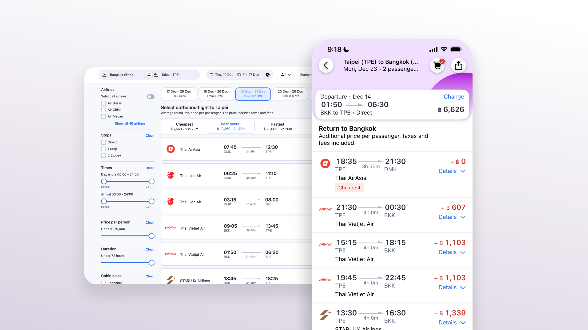
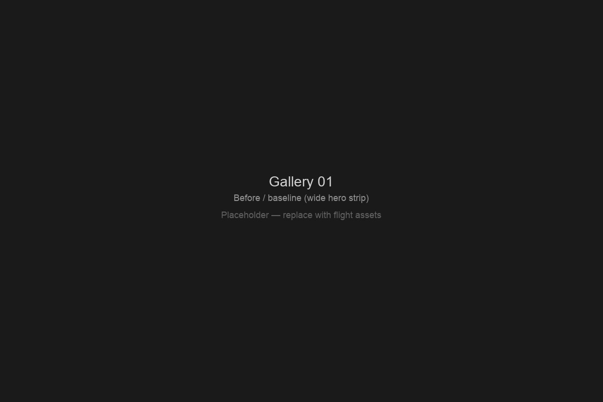

Agoda Flights
As Sr. Design Manager for Agoda Flights, I oversee end-to-end flights experience and design quality, help scope priority areas for roadmap funding and resourcing, and keep design influential in cross-functional decisions. A flagship thread of this work is a full search funnel revamp—from how travelers first search to how the product earns their trust through each step.

Context
Flights is a high-stakes surface: travelers compare options quickly, tolerate little ambiguity, and expect search through checkout to feel coherent and fast. The work sits alongside strong product and engineering partners, where small UX gaps compound into drop-off, support load, and brand perception.
Before the revamp
The legacy search funnel had grown through incremental releases: patterns and hierarchy were not always aligned end-to-end, and the experience did not fully reflect how we wanted to guide search, comparison, and decision-making. That mismatch became the case for a deliberate revamp—not a visual refresh alone, but a clearer story through the funnel.
Approach
My role combined hands-on design leadership with org-facing work: raising the bar on craft, making trade-offs visible, and ensuring design had a seat at the table when scope and investment were decided.
- Quality — E2E flights UX. Oversaw the full journey so flows, components, and narrative felt consistent from first search to key decision moments—not only isolated screens.
- Strategy — funding and resources. Helped narrow focus areas so roadmap and staffing tracked the highest-impact problems for travelers and the business, not only the loudest backlog.
- Design voice — influence. Worked with stakeholders so design shaped priorities early: problem framing, success criteria, and sequencing—not just execution after decisions were fixed.
- Team. Supported three ICs—a Lead Product Designer, a Sr. Product Designer, and a Product Designer—with direction, critique, and space to own outcomes while staying aligned on the funnel narrative.

Outcome
The search funnel revamp is landing across releases; specifics and metrics stay internal, but the north star is clearer progression, stronger trust through the journey, and less friction between intent and booking.
A deeper write-up on post-booking experience is on the way—watch this space.